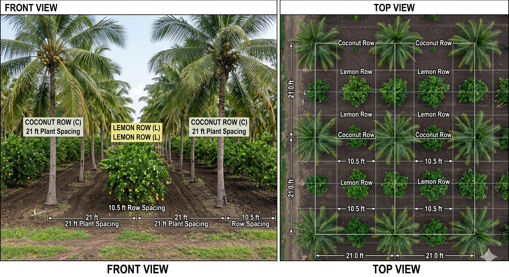
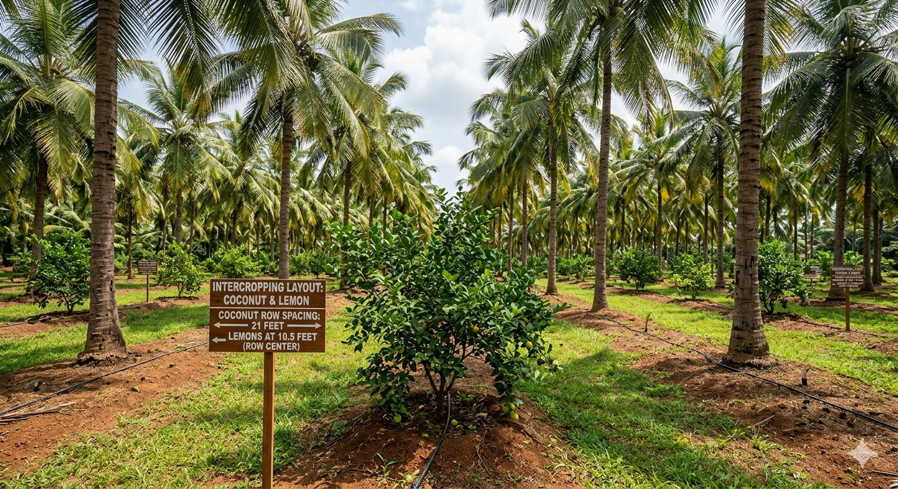

A scalable, high-density orchard model in Nellore, Andhra Pradesh — India's citrus powerhouse. Long-term yields, government support, and a clear path from farm to export brand.
India's annual lemon & lime output
Summer turnover — Nellore belt
Lemon farming across AP
Global lemon & lime production (2024)
The Nellore district, anchored by the Gudur and Podalakur markets, is a major lemon trading hub with strong year-round demand.

Start with a 10-acre high-density lemon orchard in Rapur, Nellore — low-cost red-soil land, drip irrigation, automation, and phased scale-up. Expand into aggregation, branding, direct sales, exports, and lemon processing.
An orchard model designed for capital efficiency, long-duration cash flow, and scale.
Rectangular 19 ft × 14 ft spacing fits ~163 plants per acre, improving yield per unit land and reducing cost over time.
Bulk cultivation with automated drip irrigation and fertigation lowers input, labour, and supervision costs at scale.
Subsidies for solar pumps, drip irrigation, horticulture development, and Kisan Credit reduce capital burden significantly.
A structured orchard generates recurring income from Year 5 to Year 20+, with yields increasing as trees mature.
Rapur, Nellore — low-cost cultivable red-soil land with practical horticulture expansion potential.
Land preparation, fencing, bore/irrigation setup, drip installation.
Planting selected varieties (TAL-94-14, CRS-21, Petluru Pulusu, Balaji). Training, pruning, nutrition management.
Canopy development, pest management, intercropping (lemon + coconut, mirchi, grams) to support cash flow.
Full-scale summer harvesting begins. Yield increases year-on-year as trees reach maturity.

19 ft × 14 ft rectangular spacing → 266 sq ft per plant → ~163 plants/acre (theoretical). Conservative planning: 150 plants/acre allowing for pathways and field margins.
Conservative estimates for a 10-acre orchard. Summer-only yields; actual returns expected to be higher.
| Item | Estimate |
|---|---|
| Land acquisition (10 acres) | ₹80 L – ₹1 Cr |
| Plantation, fencing, drip irrigation | ₹10 L |
| Year 0–4 management | ₹10 L |
| Total Pre-Harvest Investment | ₹1.00 – ₹1.20 Cr |
| Year | Yield / Tree | Total Yield | Revenue (₹80/kg) | Revenue (₹100/kg) | Est. Cost @50% | Est. Profit @50% |
|---|---|---|---|---|---|---|
| 5 | 20 kg | 30,000 kg | ₹24,00,000 | ₹30,00,000 | ₹12 – 15 L | ₹12 – 15 L |
| 6 | 25 kg | 37,500 kg | ₹30,00,000 | ₹37,50,000 | ₹15 – 18.75 L | ₹15 – 18.75 L |
| 7 | 30 kg | 45,000 kg | ₹36,00,000 | ₹45,00,000 | ₹18 – 22.5 L | ₹18 – 22.5 L |
| 8 | 30 kg | 45,000 kg | ₹36,00,000 | ₹45,00,000 | ₹18 – 22.5 L | ₹18 – 22.5 L |
Scale the orchard, bypass mandi deductions (~12%), and build direct channels.
Create a farm brand for premium lemons. Sort, grade, and sell directly to wholesalers, retailers, and food businesses.
Explore Middle East & international exports — lemons, paddy, mirchi, green gram, black gram, and cereals.
Lemon juice, peel products, oil extraction, preserved lemons — a government-subsidised processing plant can attract regional farmers.
Buyer-seller marketplace at the factory outlet. Direct trade eliminates 12% mandi charges and improves farmer realization.
From a single orchard to a ₹10–50 Cr agriculture and supply-chain business.
Recurring income from a single orchard asset
Estimated net margin after operating costs
Mandi charges eliminated with direct branding
Potential scale with processing & exports
Data sources: FAOSTAT (2024 global production), Wikipedia (India production share), founder field research (Nellore market data).